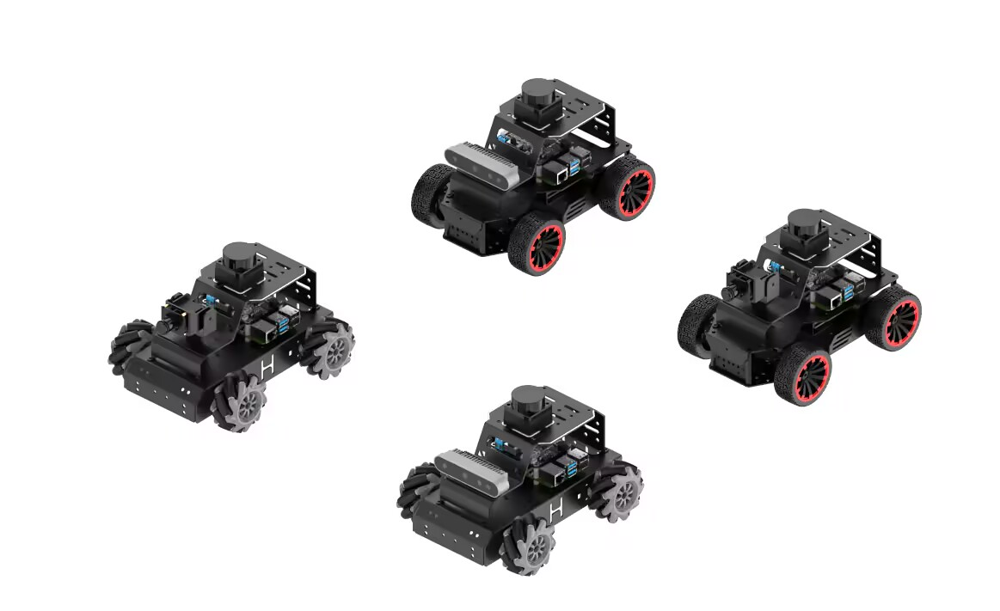

ก่อนเริ่มการเชื่อมต่อ เรามาทำความรู้จักส่วนประกอบสำคัญของหุ่นยนต์ MentorPi M1 กันก่อนครับ

หุ่นยนต์ MentorPi M1 จำเป็นต้องเชื่อมต่อเครือข่ายเพื่อให้เราสามารถส่งคำสั่งและดูข้อมูลเซนเซอร์ได้แบบไร้สาย โดยระบบรองรับ 2 โหมดหลัก ดังนี้:
ในโหมดนี้ หุ่นยนต์จะทำหน้าที่เป็น Router ปล่อยสัญญาณ Wi-Fi ออกมาเอง เหมาะสำหรับใช้ในกรณีที่ห้องเรียนไม่มีอินเทอร์เน็ต หรือต้องการเชื่อมต่อแบบ 1 ต่อ 1
ให้หุ่นยนต์ไปเกาะ Wi-Fi ของห้องเรียน เหมาะสำหรับการใช้อินเทอร์เน็ต (เช่น โหลดโมเดล AI) หรือเมื่อมีหุ่นยนต์หลายตัวในเครือข่ายเดียวกัน
💡 Tip วิทยากร: แนะนำให้ใช้เครื่องมืออย่าง Advanced IP Scanner หรือดูผ่านแอปมือถือ Fing เพื่อหา IP ของหุ่นยนต์ในกรณีที่ใช้โหมด LAN ครับ
เมื่อเชื่อมต่อ Wi-Fi สำเร็จ เราต้องเข้าไปสั่งงานบอร์ด Raspberry Pi 5 ผ่านเครือข่าย โดยไม่ต้องต่อจอภาพหรือคีย์บอร์ดเข้ากับตัวหุ่นยนต์โดยตรง (Headless Setup) ซึ่งเราจะใช้เครื่องมือ 2 รูปแบบ:
SSH คือการรีโมทเข้าไปพิมพ์คำสั่ง (Terminal) เป็นวิธีที่กินทรัพยากรน้อยและรวดเร็วที่สุด เหมาะสำหรับการสั่งรันโค้ด หรือตรวจสอบสถานะระบบ
Command Prompt (cmd) หรือ PowerShellTerminal ได้เลยpipi (ขณะพิมพ์รหัสผ่าน หน้าจอจะไม่แสดงตัวอักษร ให้พิมพ์แล้วกด Enter ได้เลย)VNC อนุญาตให้เราเห็นหน้าจอ Ubuntu ของหุ่นยนต์แบบกราฟิก (GUI) เหมือนเราไปนั่งอยู่หน้าจอจริงๆ ซึ่งจำเป็นมากเมื่อเราต้องทำ Computer Vision (ดูภาพจากกล้อง) หรือดูแผนที่ (SLAM)
192.168.149.1 แล้วกด Enterpi อัตโนมัติ) ให้กรอกรหัสผ่าน: pi📝 Note: เมื่อเข้าสู่หน้าจอ VNC สำเร็จ คุณจะเห็นหน้าต่าง Desktop ของ Ubuntu 22.04 คุณสามารถเปิด Terminal ในนี้เพื่อทำงานต่างๆ ได้เช่นกัน
สำคัญมาก: โค้ดและไลบรารี ROS2 ทั้งหมดของ MentorPi M1 ไม่ได้ถูกติดตั้งบนเครื่อง Raspberry Pi โดยตรง แต่ถูกติดตั้งไว้ใน Docker Container (สภาพแวดล้อมจำลอง) เพื่อป้องกันไม่ให้ระบบหลักพังเมื่อมีการแก้ไขไฟล์ และช่วยให้ระบบทำงานได้เสถียรที่สุด
ทุกครั้งที่คุณเปิด Terminal ใหม่ (ไม่ว่าจะผ่าน SSH หรือใน VNC) คุณต้องเข้าสู่ Docker ก่อนเสมอ จึงจะสามารถใช้คำสั่ง ros2 ได้
/home/pi อยู่แล้ว):
ให้สังเกตที่บรรทัดคำสั่ง (Prompt) ใน Terminal:
pi@MentorPi:~$root@MentorPi:~/hiwonder_ws# (สังเกตว่าชื่อ User จะเปลี่ยนเป็น root และ Path จะเปลี่ยนเป็น hiwonder_ws)โค้ดทั้งหมดที่ใช้ควบคุมหุ่นยนต์จะถูกเก็บไว้ที่ /home/pi/hiwonder_ws/ ภายใน Docker ซึ่งจะเชื่อมโยง (Mount) กับไฟล์ในระบบหลัก หากคุณแก้ไขไฟล์ในโฟลเดอร์นี้ผ่าน VNC ไฟล์ใน Docker ก็จะเปลี่ยนตามไปด้วย
⚠️ ข้อควรระวัง: หากคุณพิมพ์คำสั่ง ros2 ... แล้วเจอ Error ว่า "command not found" นั่นแปลว่าคุณลืมรันคำสั่ง ./enter_docker.sh ครับ!